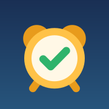

Вона надійніша за сайт: будильник спрацює навіть на заблокованому телефоні, а сторінку не треба тримати відкритою.

Так «Відбій» відкриватиметься як окрема програма на весь екран, без панелей Safari.
Кнопка внизу екрана Safari (на iPad — угорі).
Прокрутіть список дій донизу й натисніть «На початковий екран».
Потім відкрийте «Відбій» з іконки на початковому екрані.
Відкрили не в Safari? Скопіюйте адресу й відкрийте її в Safari: інші браузери на iPhone можуть не мати цього пункту.
Тривога застала під час сну? Спіть далі. Будильник розбудить вас одразу після відбою.
Будильник стежитиме за тривогою саме тут. Можна обрати область, район або громаду.
Натисніть, щоб послухати. Можна обрати й свій файл.
Наведіть камеру телефона на код.
Налаштування можна змінити, коли будильник вимкнено.
Дані: siren.pp.ua (ukrainealarm), запасне джерело — ubilling.net.ua. Жодне джерело не гарантує 100% надійності, тож для важливих подій варто мати й звичайний будильник.